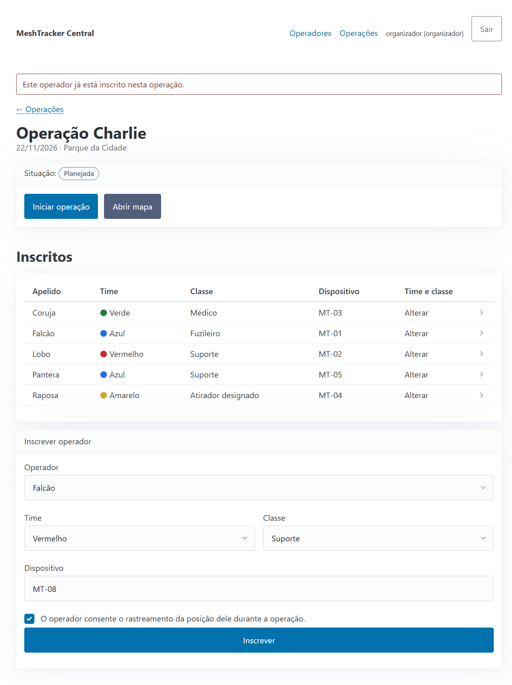

Inscrever
sem recadastrar
Falcão, Lobo, Coruja, Raposa e Pantera, já cadastrados, entram na Operação Charlie só com time, classe, dispositivo e consentimento.
- R2operador repetidoUNIQUE no banco
- R3dispositivo repetidoUNIQUE no banco
- R5sem consentimento
Meta da H1: até 3 min. Por script: 554 ms. Mede o fluxo, não uma pessoa.


Demo ao vivo · no navegador
Quem está perdido,
e há quanto tempo
59 · 60 · 61 s
119 · 120 · 121 s
ativoaté 60 s
atrasadoaté 120 s
perdidoacima de 120 s
sem sinal
Estado pelo tempo desde o último sinal (R9). As marcas são os instantes testados com o relógio injetado.
Meta da H2: apontar o perdido em até 10 s. Por script: mediana de 94 ms.
 perdido no topo da lista
perdido no topo da lista202MT-99, não inscrito: só conta como descartado (R7).
200Pacote repetido: duplicado, não grava de novo (R8).
Demo ao vivo · no navegador
Observador só lê;
a API pede token
403Observador: vê lista e mapa, sem formulários. Toda escrita dele recebe 403 (R10).
401sem token (R11)
201com token: gravado
200o mesmo pacote de novo: duplicado (R8)

É o mesmo contrato HTTP que o simulador usa e que um gateway real usaria (ADR-003).
Demo ao vivo · no navegador